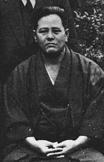

Der Verein
Yuishinkan Karate Dortmund e.V.
Unser Verein wurde am 01.07.2017 gegründet. Hervorgegangen sind wir aus der Karate-Abteilung eines Dortmunder Turn- und Sportvereins. Zurzeit trainieren bei uns rund 50 Kinder, Jugendliche und Erwachsene im Alter von 6 - 79 Jahren in unterschiedlichen, dem Alter, sowie dem Leistungsstand angepassten Gruppen (s. Training) Unser Vereinsname leitet sich aus dem von uns trainierten Stil "Yuishinkan" ab, einer Unterströmung des Goju-Ryu Karate-Do.
Der Ursprung
Karate (jap. 空手, dt. „leere Hand“) ist eine Kampfkunst, deren Geschichte sich sicher bis ins Okinawa des 19. Jahrhunderts zurückverfolgen lässt, wo einheimische okinawanische Traditionen (Ti) mit chinesischen (Shàolín Quánfǎ) Einflüssen zum Tōde verschmolzen. Zu Beginn des 20. Jahrhunderts fand dieses seinen Weg nach Japan und wurde nach dem Zweiten Weltkrieg von dort als Karate über die ganze Welt verbreitet. Inhaltlich wird Karate vor allem durch Schlag-, Stoß-, Tritt- und Blocktechniken sowie Fußfegetechniken als Kern des Trainings charakterisiert. Einige wenige Hebel und Würfe werden (nach ausreichender Beherrschung der Grundtechniken) ebenfalls gelehrt, im fortgeschrittenen Training werden auch Würgegriffe und Nervenpunkttechniken geübt. Manchmal wird die Anwendung von Techniken unter Zuhilfenahme von Kobudōwaffen geübt, wobei das Waffentraining kein integraler Bestandteil des Karate ist. Recht hoher Wert wird meistens auf die körperliche Kondition gelegt, die heutzutage insbesondere Beweglichkeit, Schnellkraft und anaerobe Belastbarkeit zum Ziel hat. Die Abhärtung der Gliedmaßen u. a. mit dem Ziel des Bruchtests (jap. Tameshiwari), also des Zerschlagens von Brettern oder Ziegeln, ist heute weniger populär, wird aber von Einzelnen immer noch betrieben. Das moderne Karate-Training ist häufig eher sportlich orientiert. Das heißt, dass dem Wettkampf eine große Bedeutung zukommt. Diese Orientierung wird häufig kritisiert, da man glaubt, dass dadurch die Vermittlung effektiver Selbstverteidigungstechniken, die durchaus zum Karate gehören, eingeschränkt wird und das Karate verwässert.
(Quelle: Wikipedia - Die freie Enzyklopädie) Den Text in voller Länge finden Sie hier.
Der Stil
Goju-Ryu
Gōjū-Ryū (jap. 剛柔流, dt. „harter und weicher Stil“) ist ein Karate-Stil mit lang zurückreichender Tradition, der besonders viele Elemente des ursprünglichen chinesischen Boxens des 17. bis 19. Jahrhunderts enthält. Der Name Gōjū-Ryū wurde von Chōjun Miyagi (1888–1953) gewählt. Miyagi bezog sich bei der Auswahl des Stilnamens auf das lange Zeit geheim gehaltene Bubishi, in dem eine der „Acht Regeln des Faustkampfes“ (拳法之大要八句 kenpō no taiyō hakku) da lautet: „Alles im Universum atmet hart und weich“ (法剛柔呑吐 hō gōjū donto).

Chojun Miyagi 1888 - 1953 Begründer des Goju-Ryu
(Quelle: Wikipedia - Die freie Enzyklopädie) Den Text in voller Länge finden Sie hier.